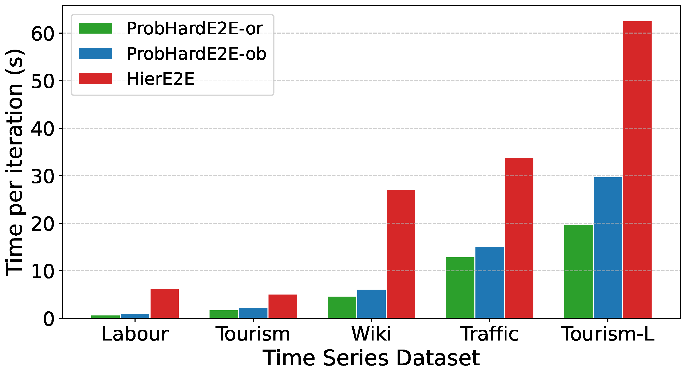
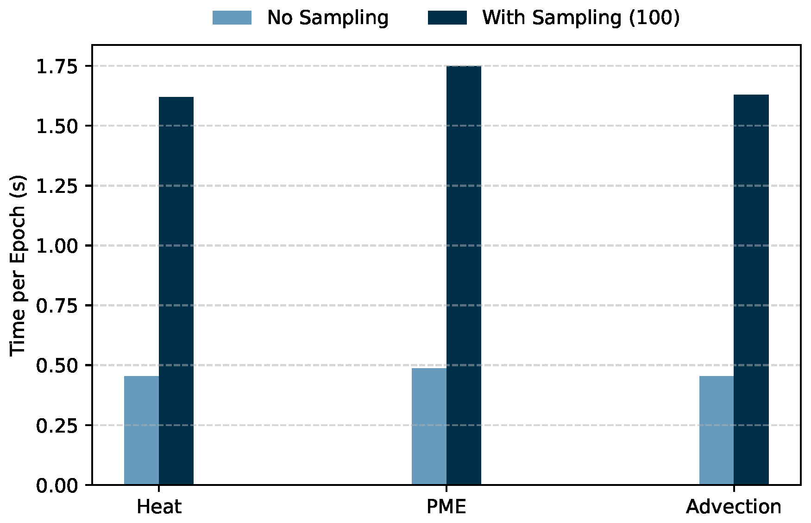
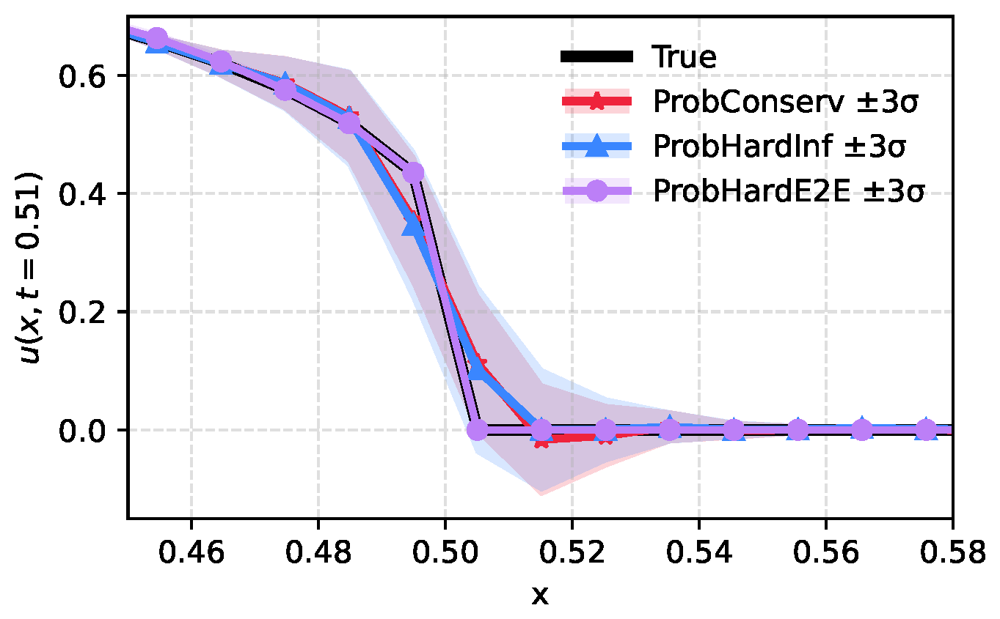
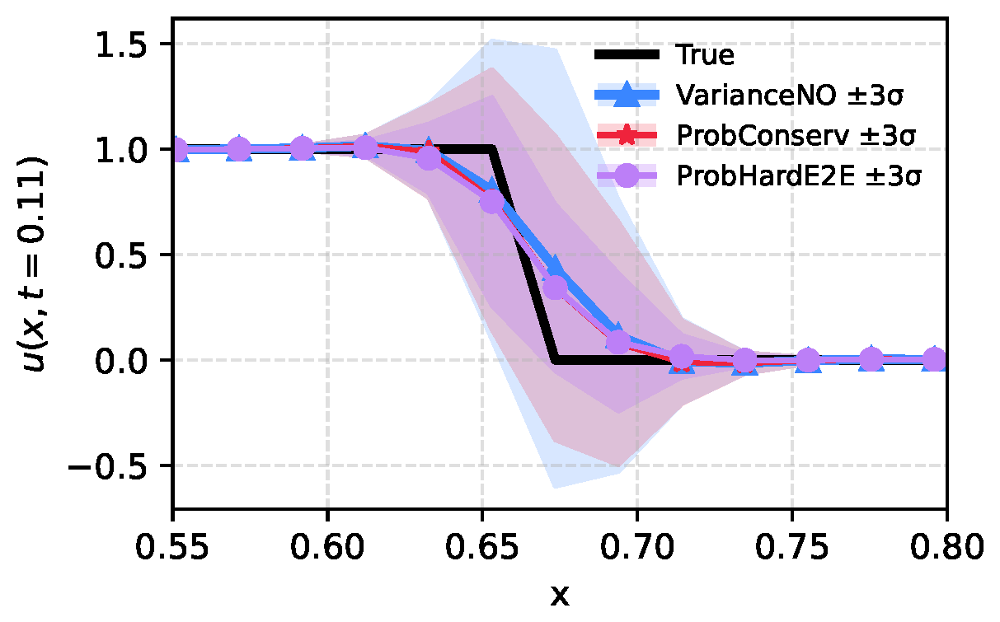

End-to-End Probabilistic Framework
for Learning with Hard Constraints
Abstract
We present ProbHardE2E, a probabilistic forecasting framework that incorporates hard operational/physical constraints and provides uncertainty quantification. Our methodology uses a novel differentiable probabilistic projection layer (DPPL) that can be combined with a wide range of neural network architectures. The DPPL allows the model to learn the system in an end-to-end manner, compared to other approaches where constraints are satisfied either through a post-processing step or at inference.
ProbHardE2E optimizes a strictly proper scoring rule without making any distributional assumptions on the target, which enables it to obtain robust distributional estimates — in contrast to existing approaches that generally optimize likelihood-based objectives, which can be biased by their distributional assumptions and model choices. It can incorporate a range of non-linear constraints, increasing the power of modeling and flexibility. We apply ProbHardE2E in learning partial differential equations with uncertainty estimates and to probabilistic time-series forecasting, showcasing it as a broadly applicable general framework that connects these seemingly disparate domains.
Landscape of ML with Hard Constraints
Exact enforcement of hard constraints is essential in domains where any violation of operational or physical requirements — coherency in hierarchical forecasting, conservation laws in physics, non-negativity in economics and robotics — is unacceptable. Within ML, constraints are typically incorporated as soft penalties (e.g., a regularization term added to the loss), or via post-training correction mechanisms to enforce a hard constraint at inference. The aforementioned hard-constrained models typically provide point estimates without uncertainty quantification (UQ), limiting their use cases in operational and physical domains requiring probabilistic forecasts. In both the forecasting and PDE application domains, none of this prior UQ work can handle complex nonlinear (hard) constraints.
The table below summarizes advantages and disadvantages of existing methods.
| Method | Domain | Constraint Type |
End-to- End |
Prob. Model w/ Variance Estimate |
Sampling- free Training |
Constraint on Distribution |
|---|---|---|---|---|---|---|
| HardNet [Min et al.] | General | Convex | ✔ | ✘ | ✔ | ✔ |
| DC3 [Donti et al.] | General | Nonlinear | ✔ | ✘ | ✔ | ✔ |
| Hier-E2E [Rangapuram et al.] | Forecasting | Linear | ✔ | ✔ | ✘ | ✘ |
| CLOVER [Olivares et al.] | Forecasting | Linear | ✔ | ✔ | ✘ | ✔ |
| PDE-CL [Négiar et al.] | PDEs | Nonlinear | ✔ | ✘ | ✔ | ✔ − |
| ProbConserv [Hansen et al.] | PDEs | Linear | ✘ | ✔ | ✔ | ✔ |
| HardC [Hansen et al.] | PDEs | Linear | ✘ | ✔ | ✔ | ✔ |
| ProbHardE2E | General | Nonlinear | ✔ | ✔ | ✔ | ✔ |
ProbHardE2E: A Unified Probabilistic Optimization Framework
ProbHardE2E uses a two-step predictor–corrector procedure. The base model $f_\theta$ predicts distribution parameters $(\boldsymbol{\mu}_\theta(\phi), \boldsymbol{\Sigma}_\theta(\phi))$ without constraint awareness (Predictor Step). The DPPL then restricts the parameter space to $\bar{\Theta} \subseteq \Theta$ such that for all $\hat{u}_\theta(\phi) \sim \mathbf{Y}_\theta(\phi)$, the constraints $g(\hat{u}) \leq 0$ and $h(\hat{u}) = 0$ are satisfied (Corrector Step).
Equivalently, the DPPL can be formulated as a constrained least-squares problem on samples of $\mathbf{Z}_\theta(\phi)$:
$$ u^*(z) \;:=\; \arg\min_{\substack{g(\hat{u})\leq 0,\; h(\hat{u})=0}} \|\hat{u} - z\|^2_Q $$where $\|x\|_Q = \sqrt{x^\top Q x}$ for some symmetric positive semi-definite matrix $Q$.
Location-scale distributions. When the prior belongs to a multivariate location-scale family, the transformed distribution $\mathbf{Y} = \mathcal{T}(\mathbf{Z})$ converges (to first order) to $\mathcal{F}(\hat{\mu}, \hat{\Sigma})$ with:
$$ \hat{\mu} = \mathcal{T}(\mu), \qquad \hat{\Sigma} = J_{\mathcal{T}}(\mu)\,\Sigma\,J_{\mathcal{T}}(\mu)^\top $$where $J_{\mathcal{T}}(\mu)$ is the Jacobian of $\mathcal{T}$ at $\mu$. This dual-mode design — projecting on parameters during training and on samples at inference — balances training efficiency with strict constraint feasibility at inference.
Sampling-free training with closed-form CRPS. We use a closed-form expression for the CRPS to enable an efficient, sample-free approach. Calculating the CRPS for an arbitrary distribution requires generating samples, but closed-form expressions exist for several location-scale distributions (Gaussian, logistic, Student's $t$, beta, gamma, uniform). Models trained with 100 posterior samples per step incur a $3.3$–$4.6\times$ increase in epoch time relative to ProbHardE2E, which avoids sampling altogether. Note that the computational overhead of ProbHardE2E is approximately $2\times$ that of the unconstrained model.
| Constraint Type | Solution $\mathbf{u}^*(\mathbf{z})$ | Solver | Jacobian $\mathbf{J}_T$ |
|---|---|---|---|
| Linear Equality | $\mathbf{P}_{\mathbf{Q}^{-1}}\mathbf{z} + (\mathbf{I}-\mathbf{P}_{\mathbf{Q}^{-1}})\mathbf{A}^\dagger\mathbf{b}$ | Closed-form | $\mathbf{P}_{\mathbf{Q}^{-1}}$ |
| Nonlinear Equality | $(\mathbf{u}^*, \boldsymbol{\lambda}^*)$ s.t. $\mathcal{R}(\mathbf{u}^*, \boldsymbol{\lambda}^*;\mathbf{z})=\mathbf{0}$ | Newton's method | Implicit diff. |
| Convex Inequality | $\arg\min_{h(\hat{\mathbf{u}})\leq 0}\|\hat{\mathbf{u}}-\mathbf{z}\|^2_\mathbf{Q}$ | Convex solver | Argmin diff. |
Oblique vs. orthogonal projection. The oblique projection ($Q = \Sigma^{-1}$) corrects predictions along covariance-weighted directions, better preserving the true uncertainty structure around shocks and spikes, performing more effectively on problems with heteroscedastic data. For the "easy" (smooth) Heat equation and "medium" tasks (PME and Advection), orthogonal projection ($Q = I$) reduces CRPS by 10–30% and improves MSE by up to 33%. However, in the "hard" (sharp) nonlinear Stefan problem, the oblique projection improves CRPS by more than 50% compared to the orthogonal projection.
Results
Computational Speedup
Models trained with 100 posterior samples per training step incur a $3.3$–$4.6\times$ increase in epoch time relative to ProbHardE2E, which avoids sampling altogether by using a closed-form CRPS loss and projecting directly on the distribution parameters.


Linear Constraints in Hierarchical Time-Series
We evaluate ProbHardE2E on five hierarchical time-series forecasting benchmark datasets, where the goal is to generate probabilistic predictions that are coherent with known aggregation constraints across cross-sectional hierarchies. ProbHardE2E uses DeepVAR as the probabilistic base model. Across five diverse datasets, ProbHardE2E achieves state-of-the-art CRPS on Labour, Tourism-L, and Wiki. On Tourism and Traffic it remains highly competitive, outperforming traditional approaches (ARIMA, ETS) and offering comparable performance to specialized methods (PERMBU-MINT, HierE2E).
| Dataset | ProbHardE2E-Ob | ProbHardE2E-Or | ProbConserv | HierE2E | ARIMA-NaïveBU | ETS-NaïveBU | PERMBU-MINT | DeepVAR (base) |
|---|---|---|---|---|---|---|---|---|
| Labour | 36.1±2.7 (CE=0) | 28.6±6.5 (CE=0) | 45.8±6.5 (CE=0) | 50.5±20.6 (CE=0) | 45.3 (CE=0) | 43.2 (CE=0) | 39.3 (CE=0) | 38.2±4.5 (CE=0.215) |
| Tourism | 98.9±13.0 (CE=0) | 82.4±6.6 (CE=0) | 100.7±7.7 (CE=0) | 103.1±16.3 (CE=0) | 113.8 (CE=0) | 100.8 (CE=0) | 77.1 (CE=0) | 92.5±2.2 (CE=2818) |
| Tourism-L | 155.2±3.6 (CE=0) | 156.4±9.4 (CE=0) | 176.9±21.5 (CE=0) | 161.3±10.9 (CE=0) | 174.1 (CE=0) | 169.0 (CE=0) | — | 158.1±10.2 (CE=70000) |
| Traffic | 55.0±10.6 (CE=0) | 60.6±7.8 (CE=0) | 71.0±3.9 (CE=0) | 41.8±7.8 (CE=0) | 80.8 (CE=0) | 66.5 (CE=0) | 67.7 (CE=0) | 40.0±2.6 (CE=0.192) |
| Wiki | 212.1±29.4 (CE=0) | 215.8±16.9 (CE=0) | 264.7±30.7 (CE=0) | 216.5±26.7 (CE=0) | 377.2 (CE=0) | 467.3 (CE=0) | 281.2 (CE=0) | 229.4±15.8 (CE=8399) |
Table 1. CRPS ×10⁻³ for hierarchical time-series datasets across various probabilistic forecasting algorithms. Constraint (coherency) error (CE) is given in parenthesis and is equal to 0 for all methods except the base unconstrained DeepVAR. PERMBU-MINT is not available for Tourism-L because the dataset has a nested hierarchical structure. ARIMA-NaiveBU, ETS-NaiveBU, and PERMBU-MINT are deterministic models with no model uncertainty. Bold = best.
General Nonlinear Equality and Convex Inequality Constraints
Nonlinear Equality — Porous Medium Equation (PME). We test ProbHardE2E with general nonlinear constraints using nonlinear conservation laws from PDEs. Even in this challenging case, the constraint error (CE) on the samples is 0, ensuring strict feasibility. We see an MSE improvement of at most $\approx 15$–$17\times$ when trained on CRPS, and CRPS improvement of at most $\approx 2.5\times$ for $m \in [2,3]$ over baselines that apply the nonlinear constraint just at inference time (ProbHardInf), as a reduced linear constraint (ProbConserv), and the unconstrained model (VarianceNO). ProbHardE2E is able to significantly better capture the shock and has tighter uncertainty estimates, leading to lower CRPS values than the baselines.
Convex Inequality — TVD (Linear Advection). We impose a convex relaxation of the total variation diminishing (TVD) constraint, commonly used in numerical methods for PDEs to minimize artificial oscillations: $\text{TVD} = \sum_{n,i} |u(t_n, x_{i+1}) - u(t_n, x_i)|$. Imposing this TVD relaxation improves shock location prediction compared to the unconstrained model. ProbHardE2E has smaller variance compared to both ProbConserv and VarianceNO, is less likely to predict non-physical negative samples, and has a smaller variance peak above the shock — hence less prone to oscillations than the baselines.


| PDE | Metric | ProbHardE2E-Ob | ProbHardE2E-Or | HardC | ProbConserv | SoftC | VarianceNO (base) | ||||||
|---|---|---|---|---|---|---|---|---|---|---|---|---|---|
| CRPS | NLL | CRPS | NLL | CRPS | NLL | CRPS | NLL | CRPS | NLL | CRPS | NLL | ||
| Heat (Easy) |
MSE | 0.036 | 0.047 | 0.031 | 0.301 | 0.031 | 0.090 | 0.027 | 1.26 | 0.051 | 0.156 | 0.029 | 2.01 |
| CE | 0 | 0 | 0 | 0 | 0 | 0 | 0 | 0 | 0.852 | 4.806 | 1.76 | 34.3 | |
| CRPS | 0.304 | 0.37 | 0.271 | 0.713 | 0.275 | 0.452 | 0.392 | 4.27 | 0.354 | 1.129 | 0.396 | 4.39 | |
| PME (Medium) |
MSE | 9.59 | 6.16 | 9.01 | 11.08 | 8.870 | 10.55 | 8.801 | 10.5 | 8.187 | 7.362 | 7.945 | 8.132 |
| CE | 0 | 0 | 0 | 0 | 0 | 0 | 0 | 0 | 17.091 | 29.31 | 20.19 | 27.2 | |
| CRPS | 2.01 | 2.65 | 1.798 | 1.80 | 1.785 | 1.667 | 2.03 | 2.49 | 2.065 | 2.444 | 2.02 | 2.43 | |
| Advection (Medium) |
MSE | 131 | 262 | 88.09 | 310.82 | 103.78 | 458.38 | 134 | 277 | 148.11 | 599.11 | 149 | 605 |
| CE | 0 | 0 | 0 | 0 | 0 | 0 | 0 | 0 | 19.334 | 182.99 | 18.9 | 182 | |
| CRPS | 4.19 | 7.03 | 2.94 | 8.669 | 3.236 | 11.23 | 3.88 | 7.90 | 3.963 | 9.702 | 3.98 | 10.1 | |
| Stefan (Hard) |
MSE | 186 | 207 | 394.84 | 432.92 | 394.29 | 433.28 | 303 | 273 | 431.89 | 429.06 | 425 | 425 |
| CE | 0 | 0 | 0 | 0 | 0 | 0 | 0 | 0 | 166.93 | 168.75 | 180 | 169 | |
| CRPS | 7.52 | 7.85 | 14.147 | 14.67 | 14.432 | 14.539 | 7.85 | 8.33 | 9.878 | 10.062 | 9.51 | 10.2 | |
Table 2. Test metrics on constrained PDEs across four datasets, ordered top to bottom by learning difficulty. Metrics: MSE ×10⁻⁵, constraint (conservation) error CE ×10⁻³, and CRPS ×10⁻³. Each algorithm trained with either CRPS or NLL. Ob. = oblique ($Q=\Sigma^{-1}$), Or. = orthogonal ($Q=I$). Best values per row in bold.
Conclusion
ProbHardE2E seamlessly incorporates constraints ranging from commonly used linear constraints to challenging nonlinear constraints into black-box probabilistic deep learning models using a differentiable probabilistic projection layer (DPPL). It is applicable in a wide range of scientific and operational domains, ranging from linear coherency constraints in time series forecasting to nonlinear conservation laws in solving PDEs.
Contrary to prior works which only support linear global conservation constraints, ProbHardE2E supports nonlinear conservation constraints. This paves the way for future work to enforce conservation locally over sub-regions or over control volumes à la finite volume methods. Future work also includes extending to handle general non-convex, nonlinear inequality constraints using advanced optimization techniques or relaxations, to richer covariance parameterizations (e.g., low-rank or dense), and to empirical distributions other than location-scale families by sample projection.
BibTeX
@inproceedings{utkarsh2026probharde2e,
title = {End-to-End Probabilistic Framework for Learning with Hard Constraints},
author = {Utkarsh, Utkarsh and Robinson, Danielle Maddix and Ma, Ruijun
and Mahoney, Michael W. and Wang, Yuyang},
booktitle = {International Conference on Learning Representations},
year = {2026},
url = {https://utkarsh530.github.io/probharde2e}
}